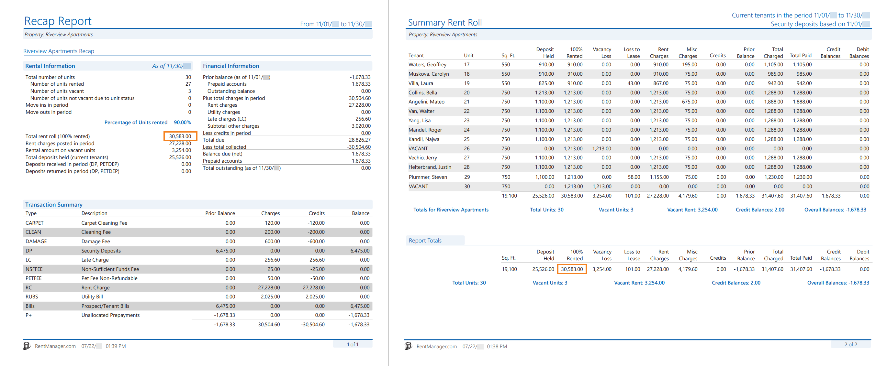

Source: https://rmxhelp.rentmanager.com/Topics/Express/KB/Report-Recap-Summary-Rent-Roll.htm
Recap and Summary Rent Roll
The Recap Report and Summary Rent Roll report both track transactions over a specified date range, and allow you to evaluate your properties when they are 100% rented out. This allows you to compare where your properties currently stand against their potential maximum earnings.
Warning
The information contained here does not replace the advice of an accountant. If you are unclear about how to interpret the data presented in the related reports, please consult your accountant.
The Recap Report displays vacancy and transactional summaries for selected properties across a date range. This report can be used to outline a property's occupancy performance and to break down the amounts collected for each charge type. Additionally, this report is beneficial in providing owners with a high-level overview of a property over a period of time.
The Summary Rent Roll report tracks transaction activity on tenant accounts over a specified period of time. You can examine held security deposits for each of these tenants, as well as vacancy loss and loss to lease totals. This report also provides a breakdown of totals for rent and non-rent charges, credits, prior balances, charges, payments, and credit and debit balances. Additionally, it is a good report to provide to your bank when they request to view your income.
Related Privileges
| Group | Privilege | Column |
|---|---|---|
| Letter/Email Templates/Reports/Packets | Run reports | Enabled |
Additionally, on the Reports tab, you must have access to Summary Rent Roll and Recap Report.
For more information, refer to Control User Access.
When run with comparable report options, the Summary Rent Roll report's 100% Rented column for a property matches the Recap Report's Total rent roll (100% rented) field for that same property.

Report Options
To populate a Summary Rent Roll report and Recap Report that complement each other, use the report option combinations listed in the table below. Report options not mentioned do not affect comparability and can be left on their default setting.
| Summary Rent Roll | Recap | Description |
|---|---|---|
|
Properties/Owners to Include |
Properties to Include |
The same properties or property group must be selected for both reports. If the Owners tab is selected for the Summary Rent Roll, then on the Recap Report, select the properties of those selected owners. |
|
Date Range |
Date Range |
The same date range must be set for both reports. |
|
Market Rent |
n/a |
On the Summary Rent Roll report, you must select the option Market Rent based on 1 month. Then in the Effective Date field, enter the same date as the To date in the Date Range. |
Troubleshooting Total Balances that are Different
While running the reports with the suggested report options above allows the reports to examine the same data, there are other factors that can cause discrepancies between these value totals.
Prorated Market Rent
If in the Market Rent field you instead select the option Prorate Market Rent, this can cause discrepancies in the report values. The Recap Report populates the Total rent roll (100% rented) value based on the market rent of all active units as of the last day of the reporting period. By default, the Summary Rent Roll populates the 100% Rented column based on the market rent of all active units as of the first day of the reporting period. Setting this report option to Market Rent based on 1 month and selecting an Effective Date as the report's ending date forces the Summary Rent Roll to report on the last day of the date range like the Recap Report.
Multiple Properties
If you are running these reports for multiple properties, the Summary Rent Roll has a Report Totals summary section that calculates the total of all 100% Rented values for all the properties included in the report. However, the Recap Report displays the Total rent roll (100% rented) field only for each individual property and does not have a summary section which totals this amount for all properties. To verify that the totals match, you must add all the Total rent roll (100% rented) values in the Recap Report for each property, then compare that sum to the Summary Rent Roll report's 100% Rented column value.